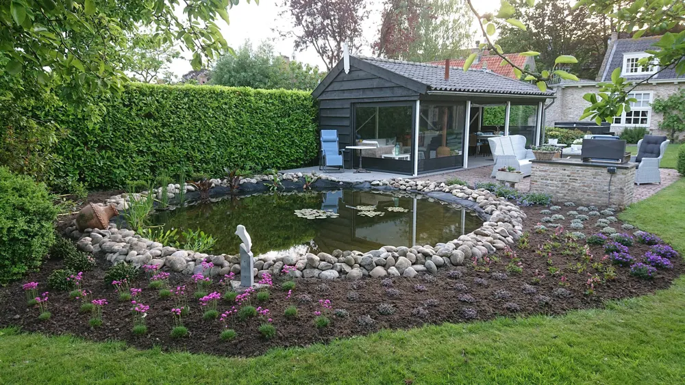
Tuinontwerp
We komen bij u langs, bespreken uw wensen en tekenen een eerste schets die we samen met u doornemen.
Meer info
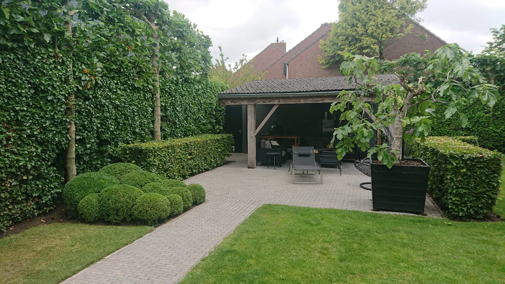
Ontwerp, aanleg, onderhoud en boomverzorging in Oud Gastel en omgeving. Snel reactie, eerlijk advies en een professioneel resultaat.
Een nieuwe tuin, een opknapbeurt of gewoon goed onderhoud. Klik op een dienst voor meer informatie.

We komen bij u langs, bespreken uw wensen en tekenen een eerste schets die we samen met u doornemen.
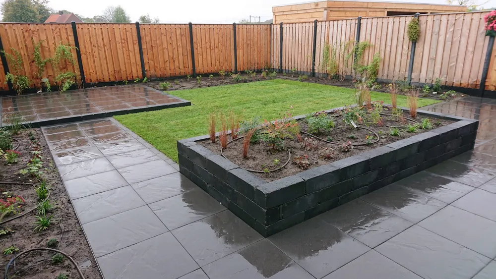
Moderne tuinen, vijvertuinen, kindvriendelijke tuinen of stadstuinen. Van graszoden tot bestrating.
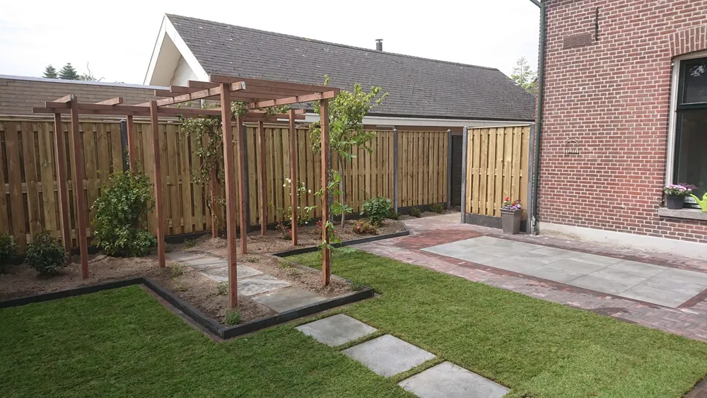
Een complete nieuwe opzet, of alleen opnieuw bestraten en de verzakkingen eruit halen.
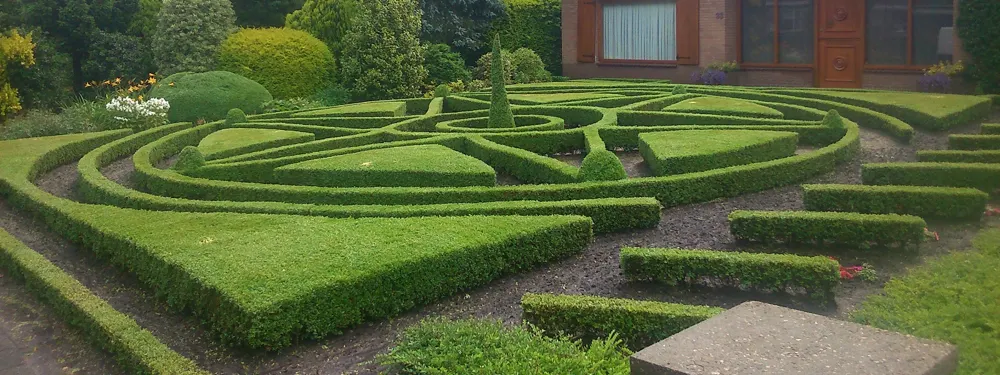
Het hele jaar een verzorgde tuin. We komen langs wanneer het u uitkomt.
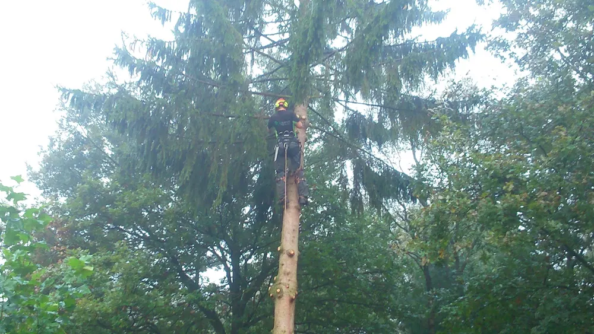
Snoeien, onderhoud, planten of kappen. Veilig en met de juiste kennis.
In een paar duidelijke stappen naar uw nieuwe tuin. Geen verrassingen achteraf.
We komen langs, bekijken uw tuin en bespreken uw wensen. Daarna krijgt u een complete offerte, zonder bijkomende kosten.
Bij aanleg of renovatie maken we eerst een ontwerp. Nieuwe ideeën? We passen het plan gewoon aan.
Onze gediplomeerde hoveniers gaan aan de slag. Is iets niet helemaal naar wens, dan maken we het alsnog goed.
We nemen al het afval mee en laten uw tuin schoon achter. Die kosten zitten al in de offerte.
Van strakke stadstuin tot vijver, tuinhuis en bomen kappen.
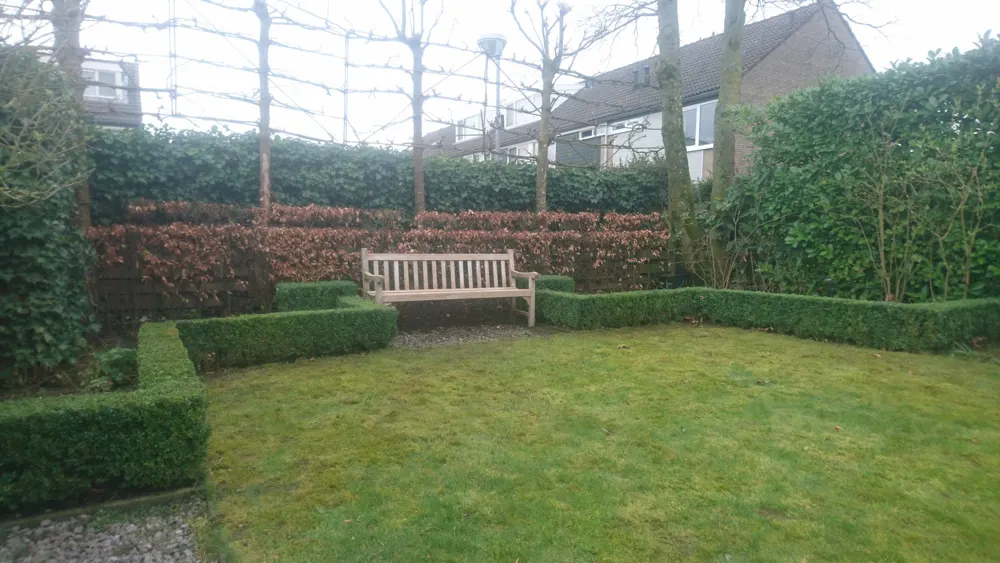
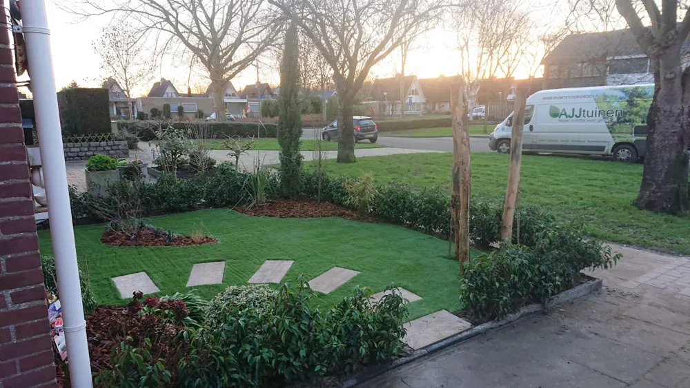
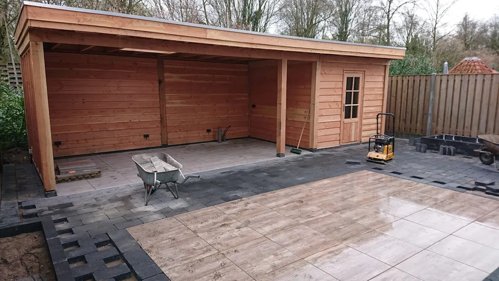
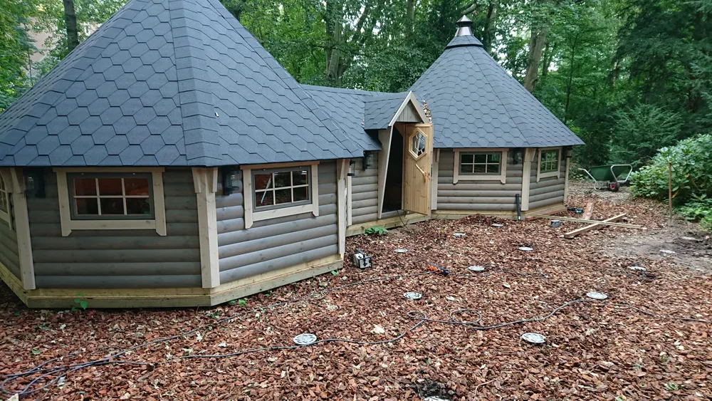
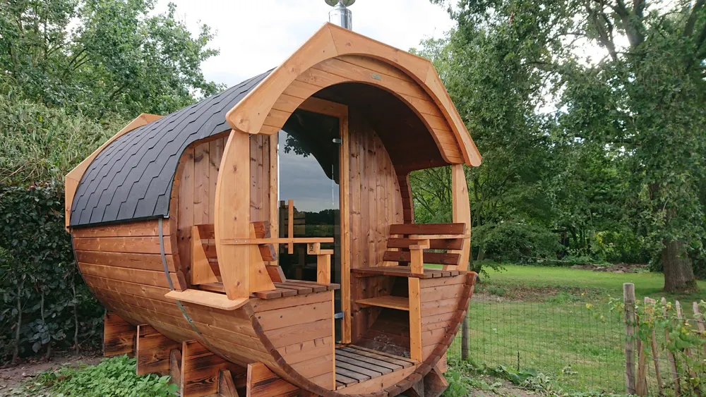
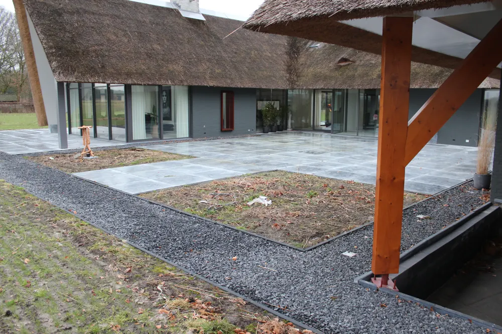
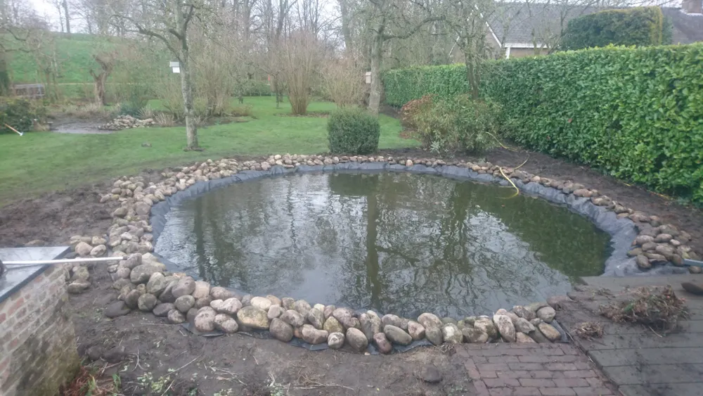
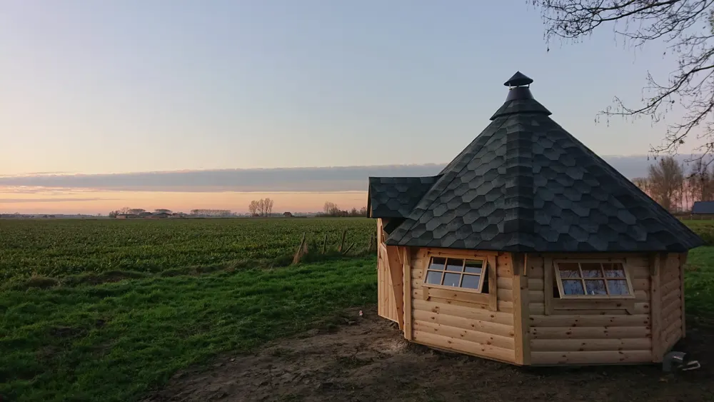
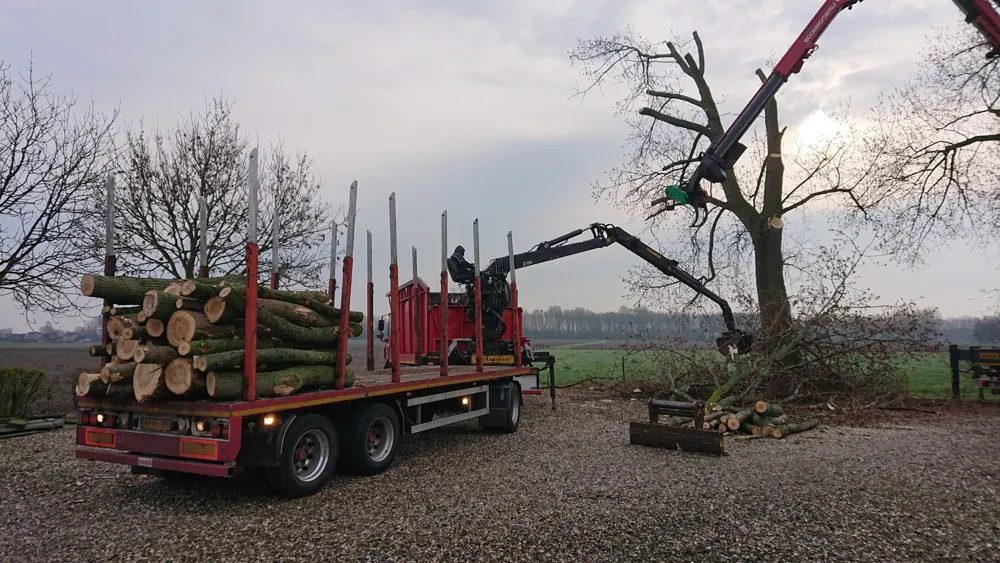
Ook voor uw bedrijfstuin, camping of terrein. We werken met de nieuwste apparatuur: milieuvriendelijker, stiller en het bespaart u kosten.
Liever geen drukte op uw terrein? We werken ook in de avond of in het weekend.
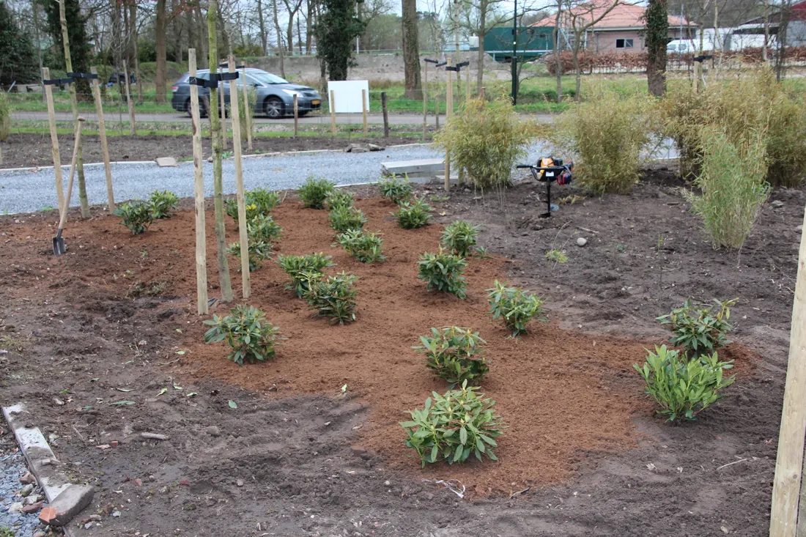
We komen vrijblijvend langs om te laten zien wat we voor u kunnen doen.
"Wat een fijne en vakkundige man ben jij. Altijd hulpvaardig, enorm veel vakkennis en een prachtig eindresultaat. Ga zo door, je bent een fantastische hovenier met vele talenten."
Hanneke JoosenBergen op Zoom"Een uitstekende indruk! Kevin is professioneel, accuraat en eerlijk in zijn adviezen. De prijs is ook erg marktconform. Wij kunnen AJJ Tuinen dan ook van harte aanbevelen!"
Fam. JansenRoosendaal"Wat een geweldig bedrijf! Vriendelijk personeel, vakkennis en topservice. We zijn super tevreden👌🏻"
Willeke Van GelderGoogle · augustus 2023AJJ Tuinen is een hoveniersbedrijf uit Oud Gastel. We ontwerpen, leggen aan, renoveren en onderhouden tuinen, van een kleine stadstuin tot een bedrijfstuin of dakterras.
We werken met goed opgeleide vakmensen en een georganiseerde aanpak. U weet vooraf wat het kost, we denken met u mee en we laten uw tuin netjes achter.
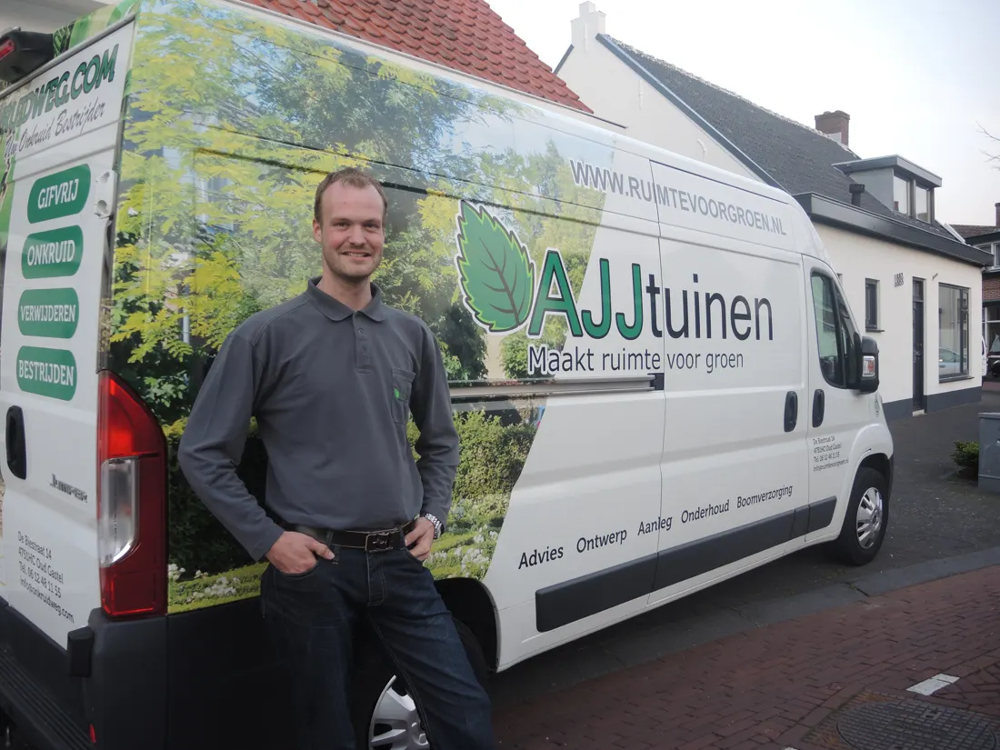
Benieuwd wat uw droomtuin kost? We komen gratis en vrijblijvend bij u langs. Standaard reageren we binnen 24 uur.